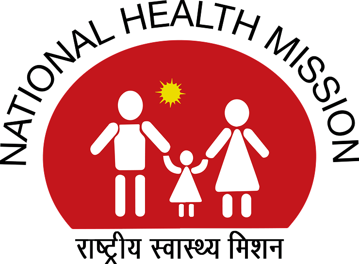

Project CHAnDAnA
Project CHAnDAnA is a comprehensive healthcare mission to eliminate Sickle Cell Anemia. It is a combined effort of IOCL (Indian Oil), Govt of Karnataka, and the Indian Institute of Science (Govt institute). The project aims to screen approximately 2.56 lakh tribal individuals over two years to identify and manage cases of sickle cell anaemia in Mysuru, Kodagu, and Chamarajanagar districts.
Read MoreWhat is Sickle Cell Anemia?

Technology Innovation

Our Event Partners
